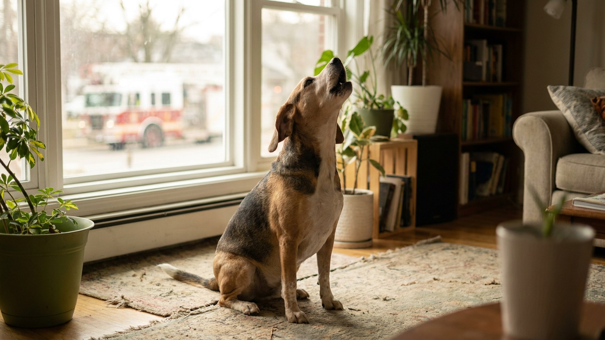

Включилась пожарная сирена за окном — и хаски на диване поднял морду и заголосил в унисон. Это не боль и не жалоба: за этим поведением стоит акустический рефлекс, которому десятки тысяч лет. Но иногда вой становится признаком тревоги — и важно различать одно от другого.
🐾 Не уверены, что это опасно?
Опишите симптом в AnimaLife — AI-ветеринар за минуту подскажет, что в пределах нормы, а когда пора к врачу.
Вой — один из древнейших коммуникативных инструментов семейства псовых. У волков он выполняет несколько функций одновременно:
Собака унаследовала эти паттерны от волкообразного предка. Несмотря на 15 000 лет одомашнивания, нейронные цепи, отвечающие за акустические ответы, никуда не делись. Именно поэтому сирена с частотой, близкой к воячьему вою (около 500–900 Гц с вибрато), запускает ответную реакцию автоматически.
Не каждый звук вызывает вой. Срабатывают преимущественно:
Городская пожарная или скорая помощь попадает именно в этот диапазон. Акустически для собаки это звучит примерно так, как если бы где-то вдали завыл другой пёс. Ответный вой — рефлекторная реакция «эхо стаи».
Некоторые собаки реагируют на голос хозяина, если тот поёт долгую протяжную ноту. Это тоже норма: животное воспринимает хозяина как часть «стаи» и отвечает ему.
Склонность к вою существенно различается по породам:
Если ваша собака из «молчаливой» породы вдруг начала систематически выть — это повод присмотреться внимательнее.
Нормальный «ситуативный» вой на сирену или музыку имеет характерные признаки:
Такой вой — это буквально «пение в унисон». Если хозяин поддерживает поведение смехом или вниманием, собака может делать это с явным удовольствием.
Обратите особое внимание, если вой сопровождается:
Вой, сочетающийся с признаками страха — признак акустической сверхчувствительности или нарастающей тревожности. Это состояние, с которым помогает работа кинолога или ветеринарного бихевиориста.
Отдельный случай — вой в одиночестве. Если соседи говорят, что собака воет весь день, когда хозяев нет дома — это уже сигнал о стрессе от разлуки, а не акустический рефлекс.
Частый вопрос: нужно ли останавливать? Зависит от ситуации.
Некоторые хозяева намеренно «воют» вместе с хаски или бигли — это превратилось в ритуал. С точки зрения поведения это не вредно: совместная вокализация действительно укрепляет социальную связь. Если вам обоим нравится — почему нет.
Важно только не закреплять этот паттерн с испуганной собакой. И не использовать его как замену прогулкам и нагрузке: если собака воет от скуки и избытка энергии — никакое совместное «пение» не решит базовую проблему.
🐾 Питомец ведёт себя странно?
AnimaLife расшифрует поведение кошки и собаки и подскажет, что делать. Попробуйте бесплатно прямо в мессенджере.
🐾 Понравился разбор?
Подпишитесь на канал — каждый день разбираем по одному тревожному симптому у кошек и собак: что в пределах нормы, а когда пора к врачу. Подпишитесь, чтобы не пропустить разбор, который может спасти здоровье вашего питомца.